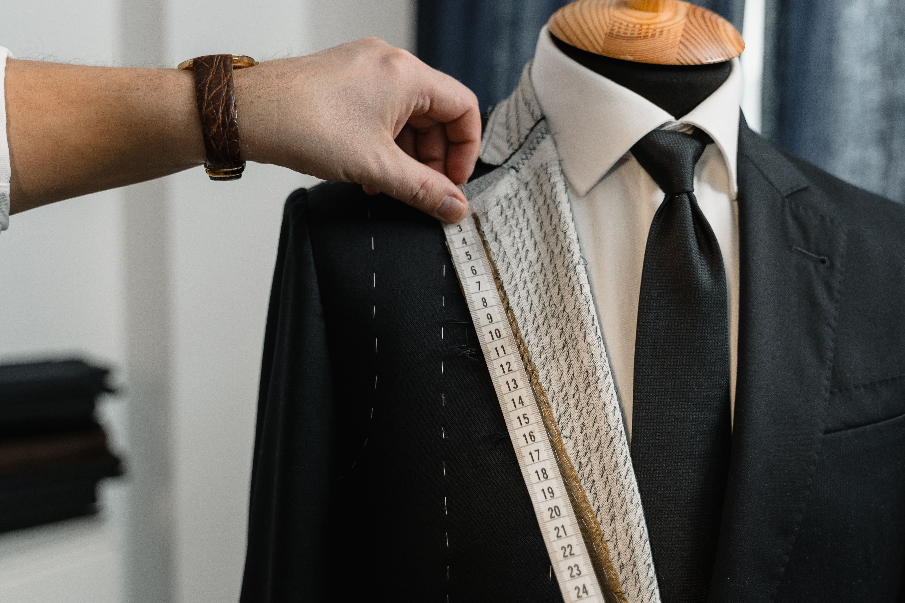
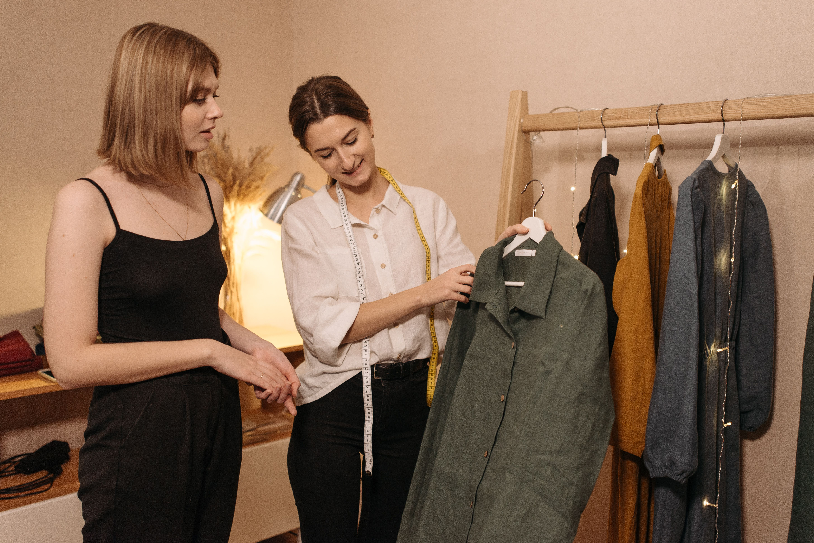
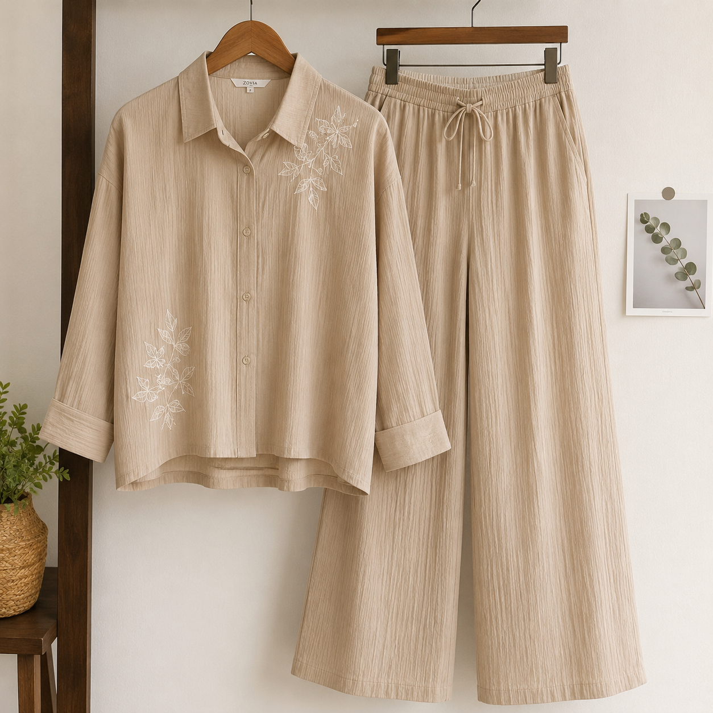

The Original Hem: How to Keep Jeans Looking Factory-Fresh After Alteration
Denim hems don't need to look re-stitched. Here's how we preserve the original factory hem — and how to ask for it.
Denim hems don't need to look re-stitched. Here's how we preserve the original factory hem — and how to ask for it.

Oversized silhouettes are everywhere — but they still need structure. We break down the new rules of the drape.
Moths hate clean, aired wool. Your tailor's no-fuss routine for keeping suits alive for a decade.

Not every garment deserves surgery. Here's the checklist we run through before we pick up the scissors.
The instinct to scrub is wrong. Save the garment with these calm, immediate steps.

Matching sets are back — and the secret is in the fit across both pieces. How we make the co-ord look effortless.
No articles match your search.
Bring your garments in — we'll handle the rest.